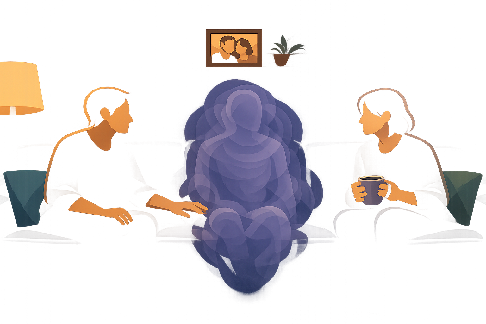
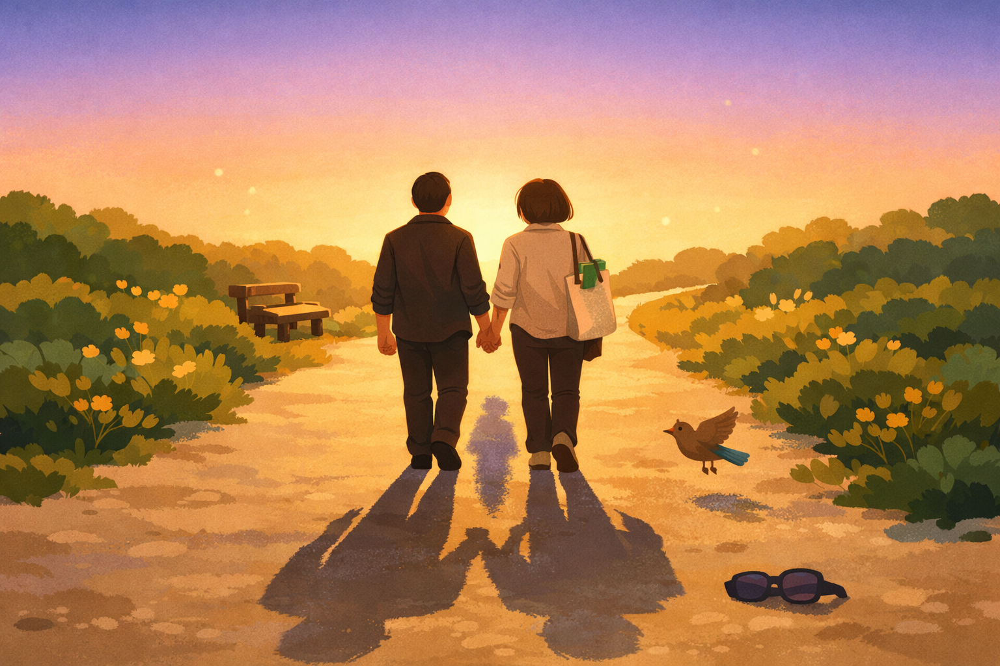

By Rustam Iuldashov
30 years lived experience with chronic migraine | Sources: 22 peer-reviewed references including Mayo Clinic Proceedings (n=13,064 dyads), Journal of Clinical Psychology (RCT, n=54), Neurología (n=155) | Last updated: March 22, 2026
Medical Note: This content is based on peer-reviewed research from Mayo Clinic Proceedings, Journal of Clinical Psychology, Contemporary Family Therapy, Annals of Behavioral Medicine, and Science. The author is a patient advocate, not a licensed medical professional. Always consult your healthcare provider for medical or psychological concerns.
Dear Person I Love,
You’re standing in the kitchen with two movie tickets. In the bedroom, the curtains close. The lights go off. The door clicks shut.
You haven’t broken up. No one has left. But the evening is over — and no one said goodbye.
Every time you retreat into the dark, a small funeral happens on the other side of that door. Not for you — you’re right there, just meters away. But for the conversation we were having. The dinner we’d planned. The version of us that exists when migraine isn’t in the room.
I want you to know something I’ve never said out loud: I have never once been angry at you. But I have been angry. At the invisible thing that takes you mid-sentence. At the thief that steals our weekends and replaces them with silence.
This feeling — the one where you grieve someone who hasn’t gone anywhere — turns out to have a name. Family therapist Pauline Boss calls it ambiguous loss.[1]
This letter is long overdue.
The Loss That Has No Funeral
You know grief. Somebody dies, and the world makes room. There are rituals, condolences, casseroles from neighbors.
But what happens when the loss repeats every week? When the person you love is alive and breathing in the next room — but unreachable? When you can’t plan, can’t grieve, and can’t fully relax because you don’t know if tomorrow will be a good day or another dark room?
Boss described this in 2002: a kind of grief that breaks every rule. No closure. No ceremony. Just a slow, recurring ache that nobody thinks to name.[1] In chronic illness, the uncertainty of fluctuating symptoms — not knowing daily capabilities, not knowing what version of your partner will wake up — creates what she called “relationship confusion.”[1] You live in permanent standby.
A 2023 study measured this standby. Researchers surveyed 155 partners of migraine patients across five headache centers in Spain. Nearly 73% reported canceling plans with friends because of their partner’s attacks.[2] About 15% showed moderate-to-severe anxiety levels — significantly higher than the general population.[2] And here’s what struck me: the heaviest burden fell not on the workplace, but on the intimate spaces — the relationship, the friendships, the time with children.[2]
Nobody sends flowers for canceled dinners. But the grief accumulates.
Try This Tonight
The next time migraine cancels a plan, acknowledge it out loud — to yourself or to each other. “We lost tonight. That’s real.” Naming the loss is the first step toward not carrying it alone.
The Third Person in Every Room
Here’s a question that changed how I think about us: Who am I actually frustrated with?
Not you. Never you. I’m frustrated with the thing that shows up uninvited, rearranges our life, and leaves without apologizing. And the moment I started thinking about migraine as a thing — separate from you — everything shifted.
Michael White and David Epston, the founders of narrative therapy, built an entire approach around this idea. They called it externalization: separating the problem from the person who carries it.[3] You stop saying “she has a headache again” and start saying “migraine showed up again.” The language sounds small. The effect is seismic. The blame leaves the body. The couple turns from facing each other in frustration to standing shoulder by shoulder, facing the intruder together.[4]
The CaMEO study — the largest investigation of migraine’s family impact ever conducted, with over 13,000 respondents and 4,022 migraineur-spouse pairs — found that between 24% and 40% of people with episodic migraine believed their partner didn’t fully understand the severity of their attacks.[5]
That perception gap is where resentment takes root. Externalization closes it. When both people can point at migraine as the enemy — not each other — empathy has room to breathe.
In our app, we named the migraine character “Mi.” Not as a mascot. As a way to give the invisible thing a shape — so couples can talk about it without talking past each other. Narrative therapy in your pocket.
Try This Tonight
Give your migraine a name. Something ridiculous works best — “Gerald,” “The Fog,” whatever makes you both smirk. You’re not minimizing the pain. You’re evicting it from your identity and placing it on the chair beside the bed, where it belongs.

What Partners Never Say
A phenomenological study of eight couples living with chronic migraine — one of the few to interview partners individually, not just alongside the patient — revealed three truths that rarely reach a doctor’s office:[6]
Invisible caregiving. Partners absorb responsibilities silently. School runs. Meal prep. Emotional regulation of children during an attack. They don’t call themselves “caregivers” because migraine isn’t cancer, isn’t Alzheimer’s, isn’t a diagnosis that earns you a support group or a day off. But the work is real, and it is relentless.
The guilt spiral: the partner feels guilty for feeling frustrated. The person with migraine feels guilty for causing frustration. Both hide their guilt from each other — and the silence that follows looks like distance, but is actually a misguided attempt at protection.[6]
The search for balance. Couples described constantly recalibrating who gives and who takes — a seesaw that never quite settles. When the imbalance tips too far, one partner quietly stops asking for what they need.[6] Not because they don’t need it. Because asking feels selfish when someone you love is in pain.
Try This Tonight
Tell your partner one thing you gave up this week that they didn’t know about — a call you skipped, a plan you quietly canceled. Not as accusation. As honesty. Silence protects no one.
⚠️ When to Seek Professional Help
If you or your partner are experiencing persistent anxiety, depression, emotional exhaustion, or withdrawal from social life because of chronic migraine’s impact on your relationship — these are not character flaws. They are the natural consequence of sustained emotional caregiving without support. Seek help immediately if you notice: inability to sleep for more than a few hours, persistent feelings of hopelessness or resentment, emotional numbness, or withdrawal from all social contact. Contact a licensed therapist experienced in chronic illness and family dynamics. Your pain deserves attention too.
The Science of Caring Without Disappearing
Charles Figley coined the term compassion fatigue to describe what happens when empathy runs dry — a state of emotional and physical exhaustion from absorbing someone else’s pain.[7] First documented in professional caregivers, the pattern has since been confirmed in family members of people with chronic conditions: insomnia, irritability, social withdrawal, a growing inability to feel.[8]
But here’s what the research also shows: the antidote isn’t distance. It’s togetherness — done right.
A meta-analysis of dyadic coping in chronic illness found that positive coping strategies between partners explained 30% to 40% of the variance in relationship satisfaction.[9] That’s not a marginal effect. That’s the difference between a relationship that survives chronic illness and one that fractures under its weight.
What does “positive dyadic coping” look like on a Tuesday evening? Open conversation about how the illness is affecting both of you. Collaborative problem-solving — not “I’ll handle it” but “what should we do?” Shared emotional support: not one-sided martyrdom, but mutual tending. A separate meta-analysis of 33 couple-oriented interventions confirmed that when both partners engage in treatment together, outcomes improve significantly — less depression, better marital functioning, even reduced pain — outperforming patient-only therapy and usual care.[10]
The implication is unmistakable. Migraine is not just the patient’s condition. It is the couple’s challenge. And couples who name it as such fare measurably better.
Five Things I Wish You Knew
A note to my fellow silent partners — and to the person who loves one.
These aren’t complaints. They’re bridges.
1. Your pain is my pain — literally. Neuroscience research using fMRI has shown that watching a loved one in pain activates the same affective pain circuits as experiencing pain yourself.[11] When you hurt, part of me hurts. That isn’t a burden. It’s the biology of love. But biology that isn’t cared for becomes injury.
2. I cancel things before you know they existed. Partners of people with migraine develop a reflex of preemptive cancellation — silently adjusting expectations to shield both of you from disappointment. The Spanish partner study found this was the most common adaptation, affecting nearly three out of four partners.[2] We don’t tell you about the plans we unmake. We barely admit it to ourselves.
3. I don’t need you fixed. I need you honest. A longitudinal study tracking 242 couples over a year found that open communication about chronic illness predicted better relationship satisfaction, closeness, and even sexual satisfaction — for both partners.[12] Hiding your pain to protect me doesn’t protect me. It isolates us both.
4. “How can I help?” is sometimes the wrong question. Self-compassion researcher Kristin Neff developed a practice called “Compassion with Equanimity” specifically for caregivers.[13] On the in-breath, you imagine breathing in compassion for yourself. On the out-breath, compassion for the person you care for. It acknowledges a truth partners rarely say aloud: I can’t make this stop. And that has to be okay. Her randomized controlled trial showed that self-compassion training significantly increased compassion satisfaction while reducing stress and depression.[17] Caring more doesn’t mean caring yourself into the ground.
5. I need my own story. Narrative therapy teaches that every person needs authorship over their own life.[3][20] Partners of people with chronic illness can lose their individual narrative — identity consumed by the caregiving role. Reclaiming hobbies, friendships, personal goals isn’t abandonment. It’s the oxygen mask principle: you cannot hold space for someone else if you have no space of your own.
Try This Tonight
Pick one thing from the list above that resonated, and share it with your partner. Not the whole article. Just one sentence. Start with: “I read something today, and it sounded like us.”
Re-Authoring the Story
Here’s what 30 years of living with migraine have taught me — and what watching my own loved ones live with my migraine has made impossible to ignore:
The best relationships aren’t the ones where migraine doesn’t intrude. They’re the ones where both people are allowed to say, out loud: this is hard. Where the person with migraine can retreat to the dark room without guilt, and the partner can go meet friends without shame.
Narrative therapists call this “re-authoring.”[4] You don’t erase migraine from the story. You refuse to let it be the only story. The narrative shifts from “we are fighting migraine” to “we learned to take care of each other while migraine was in the room.”
To every silent partner reading this: you are not invisible. Your grief is real. Your exhaustion is valid. And your love — the kind that keeps adjusting, keeps showing up, keeps holding space in the dark when no one is watching — is one of the most powerful medicines no prescription will ever match.
You deserve to be seen.
This letter is a start.

Key Takeaways
- Partners of people with migraine experience ambiguous loss — a recognized form of grief without closure that creates relationship confusion and chronic anxiety.[1]
- Nearly 73% of migraine partners cancel social plans due to attacks, with significantly elevated anxiety compared to the general population.[2]
- Externalizing migraine as “the third person” — a narrative therapy technique — helps couples face the problem together instead of blaming each other.[3][4]
- Dyadic coping explains 30–40% of the variance in relationship satisfaction for couples with chronic illness — making togetherness the single most important relational factor.[9]
- Self-compassion protects partners from burnout: research shows it increases caregiving satisfaction while reducing stress and depression.[13][17]
- Open, honest communication about pain predicts better outcomes for both partners — hiding symptoms to “protect” a partner backfires.[12]
⚕️ Important Medical Disclaimer
This article is for informational and educational purposes only and does not constitute medical advice, diagnosis, or treatment. The author, Rustam Iuldashov, is not a licensed physician, psychologist, neurologist, or healthcare professional. He is a patient advocate with 30 years of personal experience living with chronic migraine.
All clinical claims in this article are sourced from peer-reviewed research published in indexed medical journals. Study designs and sample sizes are noted where applicable.
The psychological concepts discussed here — including ambiguous loss, externalization, dyadic coping, and self-compassion — are drawn from published clinical frameworks and research. They are presented for educational purposes and should not replace professional therapy or counseling.
If you or your partner are experiencing significant emotional distress related to chronic migraine, please consult a qualified healthcare provider or licensed therapist experienced in chronic illness and couples therapy. This content was last reviewed for accuracy on March 22, 2026.
References
- Boss P, Couden BA. “Ambiguous loss from chronic physical illness: Clinical interventions with individuals, couples, and families.” Journal of Clinical Psychology, 58(11):1351-1360 (2002). doi:10.1002/jclp.10083. Study design: Clinical review with case study. n=N/A (theoretical framework).
- Gómez-Gallego M et al. “Evaluation of the burden of migraine on the partner’s lifestyle.” Neurología (English Edition), 38(6):393-400 (2023). doi:10.1016/j.nrleng.2023.06.002. Study design: Cross-sectional observational. n=155.
- Carr A. “Michael White’s narrative therapy.” Contemporary Family Therapy, 20(4):485-503 (1998). doi:10.1023/A:1021680116584. Study design: Theoretical review. n=N/A.
- White M, Epston D. Narrative Means to Therapeutic Ends. New York: W.W. Norton & Company (1990). Study design: Clinical framework text. n=N/A.
- Buse DC, Scher AI, Dodick DW, et al. “Impact of migraine on the family: Perspectives of people with migraine and their spouse/domestic partner in the CaMEO Study.” Mayo Clinic Proceedings, 91(5):596-611 (2016). doi:10.1016/j.mayocp.2016.02.013. Study design: Prospective longitudinal Web-based survey. n=13,064 (4,022 dyads).
- Peters GL, Gilliland A, Engblom C. “Couples living with chronic migraines: A phenomenological study.” Contemporary Family Therapy, 41:389-401 (2019). doi:10.1007/s10591-019-09513-w. Study design: Phenomenological qualitative. n=16 (8 couples).
- Figley CR. Compassion Fatigue: Coping with Secondary Traumatic Stress Disorder in Those Who Treat the Traumatized. New York: Brunner/Mazel (1995). Study design: Clinical framework text. n=N/A.
- Cocker F, Joss N. “Compassion fatigue among healthcare, emergency and community service workers: A systematic review.” International Journal of Environmental Research and Public Health, 13(6):618 (2016). doi:10.3390/ijerph13060618. Study design: Systematic review. n=27 studies.
- Bodenmann G. “Dyadic coping and its significance for marital functioning.” In Revenson TA, Kayser K, Bodenmann G (Eds.), Couples Coping With Stress, pp.33-49. Washington, DC: APA (2005). doi:10.1037/11031-002. Study design: Meta-analysis. n=13 studies.
- Martire LM, Schulz R, Helgeson VS, Small BJ, Saghafi EM. “Review and meta-analysis of couple-oriented interventions for chronic illness.” Annals of Behavioral Medicine, 40(3):325-342 (2010). doi:10.1007/s12160-010-9216-2. Study design: Systematic review and meta-analysis. n=33 studies (25 in meta-analysis).
- Singer T, Seymour B, O’Doherty J, Kaube H, Dolan RJ, Frith CD. “Empathy for pain involves the affective but not sensory components of pain.” Science, 303(5661):1157-1162 (2004). doi:10.1126/science.1093535. Study design: fMRI experimental. n=16 couples.
- Weber KM, Solomon DH, Meyer BN, et al. “Couples and concealable chronic illness: Investigating couples’ communication, coping, and relational well-being over time.” Journal of Social and Personal Relationships, 41(2):395-420 (2024). doi:10.1177/02654075231191297. Study design: Longitudinal survey. n=242 couples (baseline).
- Neff KD, Knox MC, Long P, Gregory K. “Caring for others without losing yourself: An adaptation of the Mindful Self-Compassion program for healthcare communities.” Journal of Clinical Psychology, 76(9):1683-1698 (2020). doi:10.1002/jclp.23007. Study design: Waitlist-controlled intervention study.
- Lipton RB, Buse DC, Adams AM, Varon SF, Fanning KM, Reed ML. “Family impact of migraine: Development of the Impact of Migraine on Partners and Adolescent Children (IMPAC) Scale.” Headache, 57(4):570-585 (2017). doi:10.1111/head.13028. Study design: Cross-sectional psychometric validation. n=13,064.
- Raggi A, Giovannetti AM, Quintas R, et al. “A narrative review on the burden of migraine: when the burden is the impact on people’s life.” The Journal of Headache and Pain, 20:41 (2019). doi:10.1186/s10194-019-0993-0. Study design: Narrative review. n=49 studies.
- Buse DC, Powers SW, Gelfand AA, et al. “Adolescent perspectives on the burden of a parent’s migraine: Results from the CaMEO study.” Headache, 58(4):512-524 (2018). doi:10.1111/head.13254. Study design: Cross-sectional Web-based survey. n=587 adolescents.
- Neff KD, Germer CK. “A pilot study and randomized controlled trial of the Mindful Self-Compassion program.” Journal of Clinical Psychology, 69(1):28-44 (2013). doi:10.1002/jclp.21923. Study design: RCT. n=54 (27 intervention, 27 waitlist).
- Buse DC, Fanning KM, Reed ML, et al. “Life with migraine: Effects on relationships, career, and finances from the Chronic Migraine Epidemiology and Outcomes (CaMEO) Study.” Headache, 59(8):1286-1299 (2019). doi:10.1111/head.13613. Study design: Prospective longitudinal Web-based survey. n=16,789.
- Falconier MK, Jackson JB, Hilpert P, Bodenmann G. “Dyadic coping and relationship satisfaction: A meta-analysis.” Clinical Psychology Review, 42:28-46 (2015). doi:10.1016/j.cpr.2015.07.002. Study design: Meta-analysis. n=72 studies.
- White M. Maps of Narrative Practice. New York: W.W. Norton & Company (2007). Study design: Clinical framework text. n=N/A.
- Neff KD, Beretvas SN. “The role of self-compassion in romantic relationships.” Self and Identity, 12(1):78-98 (2013). doi:10.1080/15298868.2011.639548. Study design: Cross-sectional survey. n=104 couples.
- Pradeep R, Madhuri NL, Nemichandra SC, et al. “Impact of migraine on family members — A cross-sectional study in Southern Part of India.” Annals of African Medicine, 23(3):295-298 (2024). doi:10.4103/aam.aam_144_23. Study design: Cross-sectional. n=120 family members.

How We Create Content
- Peer-reviewed sources only. This article cites Journal of Clinical Psychology, Mayo Clinic Proceedings, Contemporary Family Therapy, Annals of Behavioral Medicine, Science, Journal of Social and Personal Relationships, Clinical Psychology Review, Headache, The Journal of Headache and Pain, and Annals of African Medicine.
- Study transparency. Study design and sample sizes noted for all clinical references.
- Source verification. All claims backed by numbered references with DOI links.
- Experience + Science. 30 years personal migraine experience combined with peer-reviewed evidence.
- Regular updates. Articles reviewed when significant new research emerges.
- No conflicts of interest. No pharmaceutical funding. No therapy organization sponsorships. No caregiver service partnerships.
Give Your Migraine a Name. Track It Together.
Migraine Companion helps couples externalize migraine — with Mi as the character you can both point at. Track attacks, identify patterns, and build a shared language for the invisible thing in your relationship. Start with Mi today.
Last reviewed: March 2026
Next scheduled review: September 2026